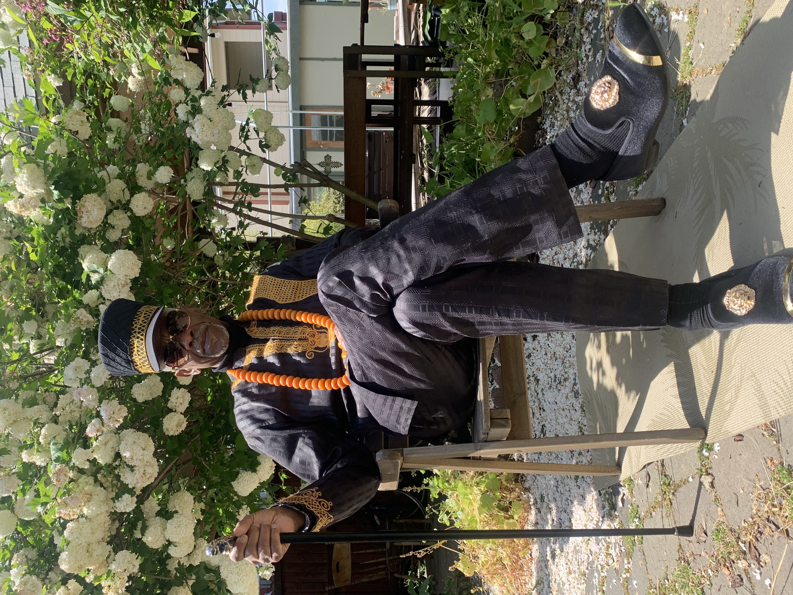
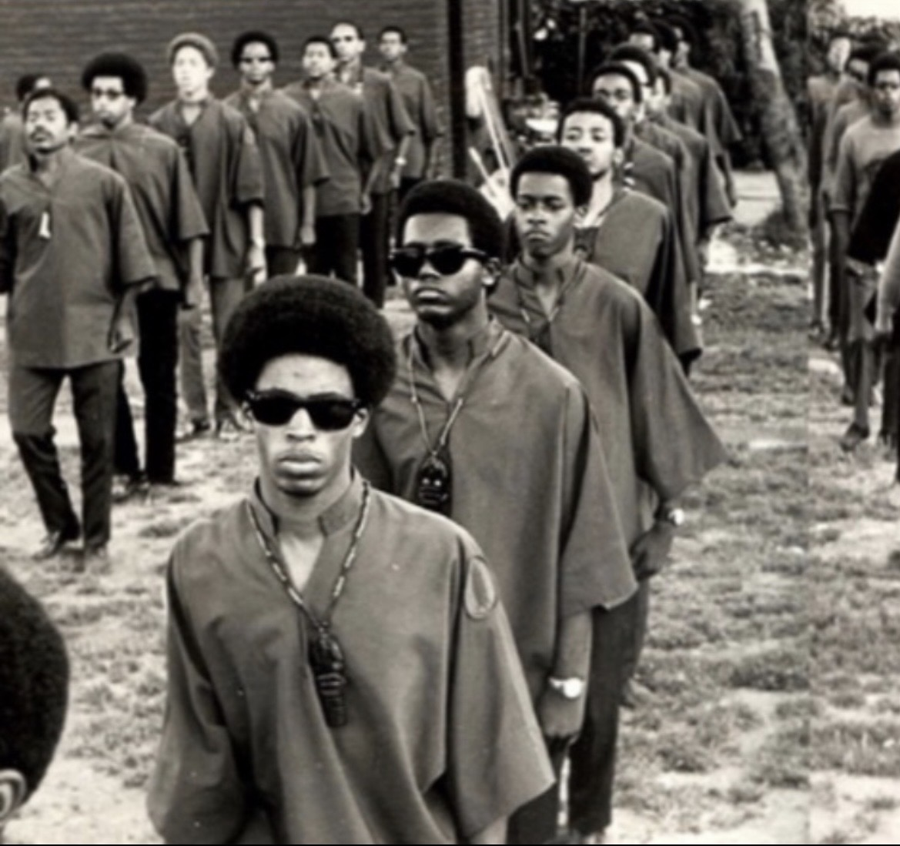

Engagements

What He Does
What He Does
Speaking Engagements
Keynotes, featured talks, and public lectures at universities, museums, conferences, festivals, and cultural institutions.
Live Readings
Immersive readings from his written work that bring history to life through first-person narrative.
Moderated Conversations
Paired dialogues with scholars, journalists, or activists where lived experience meets contemporary analysis.
Panel Participation
Expert panelist on COINTELPRO, Black liberation history, political prisoners, mass incarceration, and decolonization.
Educational Programming
Classroom visits, student Q&A sessions, and workshops at high schools, colleges, and universities.
Media Appearances
Interviews for podcasts, radio, television, documentary, and print media.

Ideal Venues
HBCUs, Ivy League universities, civil rights museums, national conferences, public libraries, book festivals, radio and podcast studios, international institutions.
Ideal Audiences
University students and faculty, museum visitors, conference delegates, book festival attendees, faith-based organizations, high school students.
He Does NOT Do
Writing workshops — he speaks and reads, he does not teach writing.
Casual panels without preparation or clear framing.
Appearances that treat his story as entertainment rather than history and education.
Lessons from the Movement
What earlier generations got right, where they fell short, and what today's generation can learn without repeating old mistakes.
Eldership, Humility & the Responsibility to Listen
Why true eldership requires humility, accountability, and collaboration across generations.
Black History as Living Memory
Why the history of Black struggle is not behind us, but alive in the present.
Race, Justice & the American Story
A deeper look at incarceration, resistance, and the unfinished meaning of freedom in the United States.
A Speaking Engagement with Watani Stiner Offers
- A rare firsthand perspective on a pivotal period in U.S. history
- Honest reflection on movement victories and movement mistakes
- Clear links between past and present struggles
- Insight on racism, incarceration, authoritarianism, and resistance
- A multi-generational invitation to think, listen, and act with greater clarity
Ideal Audiences
High Schools • Colleges & Universities • Community Organizations • Reentry & Restorative Justice Programs • Faith Communities • Conferences • Panels • Public Forums
Available For
Keynotes • Classroom Visits • Public Talks • Panels • Community Dialogues • Intergenerational Conversations • Virtual & In-Person Engagements
Book Watani for Your Event
All booking and media inquiries go through Styner Stiner, Speaking & Media Manager at the Watani Stiner Legacy Group.
Phone
Location
Oakland, CA
Website

Help Keep This History Alive
Watani Stiner has spent decades preserving a history that power tried to erase. Your contribution supports his speaking engagements, community work, and the continuation of a legacy that belongs to all of us.